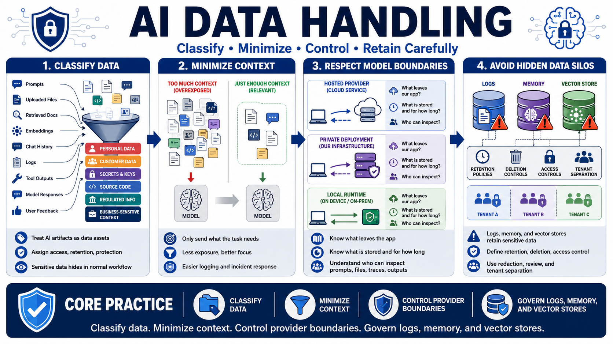

Data Handling, Privacy, and Context Control
Connecting to LMS... Progress: in progress

Narration
Data handling begins with classification. Prompts, uploaded files, retrieved documents, embeddings, conversation history, logs, tool outputs, model responses, and user feedback can contain personal data, customer data, secrets, source code, regulated information, business decisions, or sensitive operational context. These artifacts are easy to overlook because they may be created as part of normal application behavior. Treating them as data assets helps teams assign retention, access, and protection rules.
Context should contain only what the task requires. Sending every available document, chat history, profile field, code file, or internal note to a model increases exposure and can confuse the answer. Data minimization narrows the context to the relevant user request, authorized records, needed system instructions, and bounded supporting evidence. Minimization also makes logs, debugging, and incident response easier because there is less sensitive material moving through the system.
Model provider boundaries matter whether the model is hosted or local. Hosted providers, private deployments, and local runtimes have different operational and data-governance properties, but none remove the need to control what data leaves the application, how long it is retained, and who can inspect it. Teams should understand whether prompts, files, embeddings, traces, and outputs are stored, whether they can be used for debugging or evaluation, and what contractual or technical boundaries apply.
AI applications should avoid turning logs, memory, or vector stores into hidden data silos. Conversation memory may preserve sensitive context after the original need has passed. Prompt logs may include credentials, customer details, or proprietary code. Embeddings and vector stores may retain tenant-specific material that is hard to inspect manually. Secure designs define retention, deletion, access control, tenant separation, redaction, and review processes for these stores from the beginning.